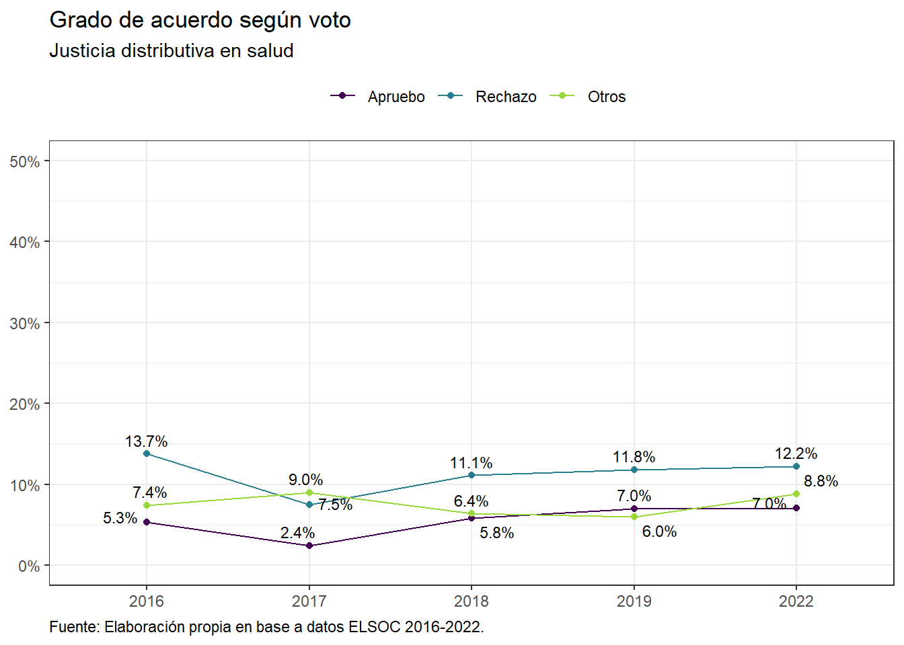
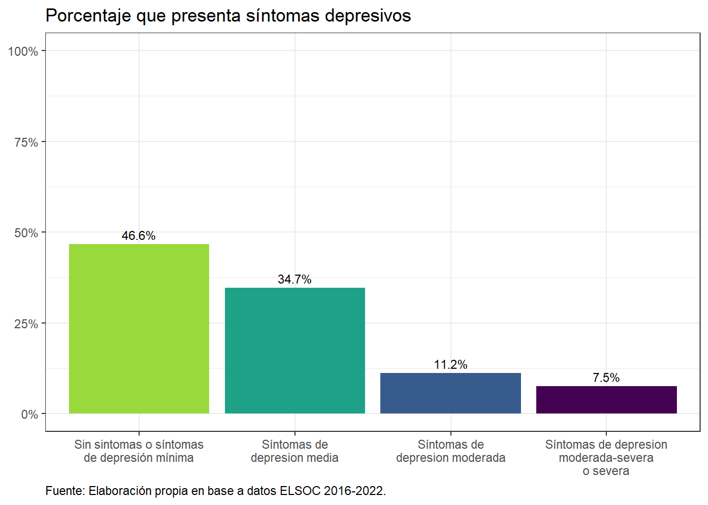
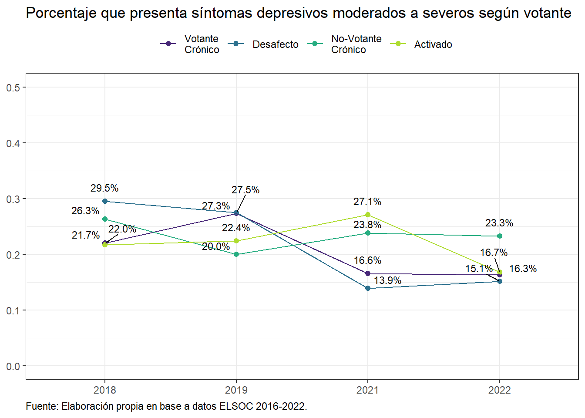
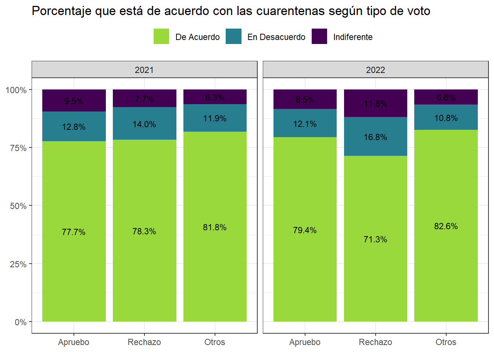

Capítulo 1 Bienestar (nombre temporal)
1.0.1 Salud Mental y Bienestar
Figura 1.1: Satisfacción con la vida, ideal de vida y salud subjetiva (ola 2022)

Figura 1.2: Satisfacción con la vida, ideal de vida y salud subjetiva, según ola

Figura 1.3: Satisfacción con la vida, ideal de vida y salud subjetiva, según ola

Figura 1.4: Satisfacción con la vida, ideal de vida y salud subjetiva, según ola
Figura 1.5: Porcentaje que presenta síntomas de depresión (2022)
Figura 1.6: Porcentaje que presenta síntomas de depresión, según voto en plebiscito
Figura 1.7: Porcentaje que presenta síntomas de depresión moderados a severos, según sexo y ola

Figura 1.8: Porcentaje que presenta síntomas de depresión moderados a severos, según voto y ola
1.0.2 Covid 19
Figura 1.9: Porcentaje que está de acuerdo con las cuarentenas según tipo de voto
Figura 1.10: Porcentaje que está de acuerdo con cuarentenas según votante
Figura 1.11: Porcentaje que está de acuerdo con priorizar la economía según tipo de voto
Figura 1.12: Porcentaje que está de acuerdo con priorizar la economía según votante